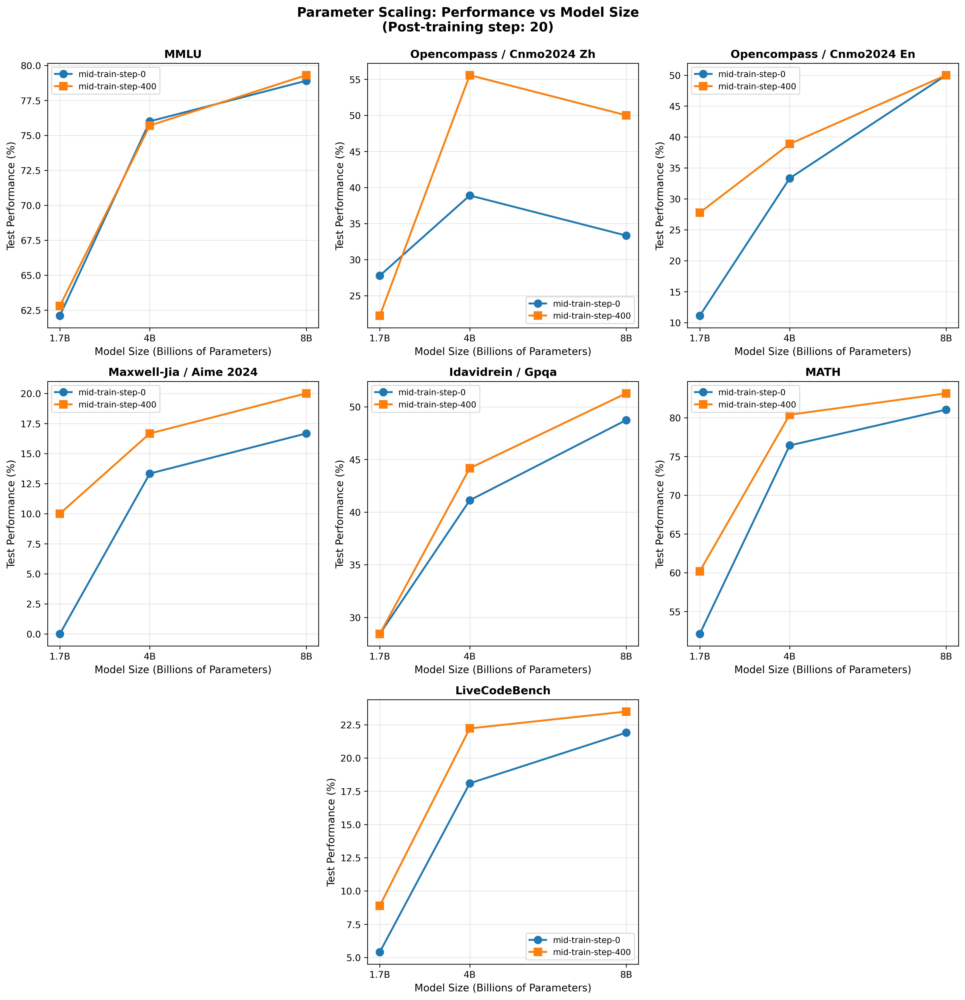

Work In Progress, DO NOT DISTRIBUTE
Reinforcement Learning Mid-Training for LLMs
- Eltayeb Ahmed
- Anya Sims
- Thomas Foster
- Tim Rocktäschel
- Jakob Foerster
*

TL;DR: We present RLM (Reinforcement Learning Mid-Training), a novel domain-agnostic method that enables RL training on datasets of unstructured documents. This breakthrough allows us to use multi-billion data-point datasets for RL training without requiring expensive curated data with verifiable rewards. RLM scales well with both parameters and data and opens the door to RL reasoning training at unprecedented scale.
Abstract
Training LLMs with RL for reasoning capability is currently data limited. The high-quality curated data with "verifiable rewards" that is traditionally required for post-training is prohibitively expensive at scale. We present a novel domain-agnostic method to use datasets of unstructured documents for RL training. Now, pre-existing multi-billion data-point datasets can be used for RL training for reasoning.
We show that our method scales well both with parameters and with data, increasing model capabilities. Our approach involves corrupting documents and training models to restore them, using this as a reinforcement learning task. This simple yet effective technique allows us to scale reasoning datasets to hundreds of millions of data-points, far beyond existing reasoning benchmarks which contain only tens of thousands of samples.
Method Overview
The current state-of-the-art for training reasoning models involves doing reinforcement learning on problems with verifiable rewards such as maths and code competition problems. This limits our ability to train reasoning models with strong abilities outside mathematical and computational domains.
RLM can take an arbitrary corpus of documents—consisting of unstructured text, articles, papers, forum discussions, etc.—and use the corpus as data for reinforcement learning, improving a model's ability to reason without bespoke post-training data.
We do this by:
- Corrupting documents by masking a random contiguous portion (up to 30%) of each document
- Proposing un-corruption as a task to the LLM during training
- Applying reinforcement learning to optimize the model's ability to restore the original documents
This approach is domain-agnostic and allows us to leverage vast amounts of existing textual data for training reasoning capabilities.
Parameter Scaling
Our method demonstrates consistent improvements across different model sizes, from 1.7B to 8B parameters, showing that RLM scales effectively with model capacity.

Data Scaling
Post-training curves starting from models without mid-training (blue), with 200 steps of mid-training (orange), and with 400 steps of mid-training (red). We find that mid-training increases performance across post-training, over a wide range of benchmarks (math, general knowledge, and code).
We trained models ranging from 1.7B to 8B parameters. Our method shows consistent improvements across all model sizes on a wide range of benchmarks including MMLU, OpenCompass, GSM8K, GPQA, Hendrycks/APPS, LiveCodeBench, and MATH. We demonstrate that model performance increases as we expose models to more data over the course of RLM training. Our largest run scaled up to 128,000 documents and utilized over 4,000 GPU-hours on Isambard.
In-Task Scaling
After a few warm-up steps, we see the in-task performance on the RLM reward scales linearly with log-compute, reminiscent of pre-training cross-entropy scaling laws. This is a very promising result as the scaling characteristics of pre-training have been driving the explosion in LLM capabilities.
Post-Training Saturation
Examining the post-training progression in the figure above, we observe that improvements from post-training alone (blue line) eventually saturate. Critically, RLM raises this saturation point—with both 200 steps (orange) and 400 steps (red) of mid-training achieving higher performance ceilings. This demonstrates that RLM provides substantial benefits even in scenarios with unlimited post-training compute budgets, addressing a fundamental scaling limitation of conventional post-training approaches.
Why SFT isn't Enough
We conducted ablation studies on the Qwen3-8B reasoning model showing that:
| Benchmark | Qwen3-8B | Qwen3-8B + SFT | Qwen3-8B + RLM |
|---|---|---|---|
| AIME 2024 | 33.3% | 23.3% | 43.3% |
| CNMO 2024 | 44.0% | 27.7% | 55.5% |
| GPQA | 44.7% | 43.7% | 57.9% |
| MATH | 84.6% | 82.5% | 85.1% |
Importantly, we found that supervised fine-tuning (SFT) on documents without reasoning structure actually harms reasoning capabilities, while RLM consistently improves performance.
Citation
The website template was borrowed from Easy Academic Website Template and Jon Barron.